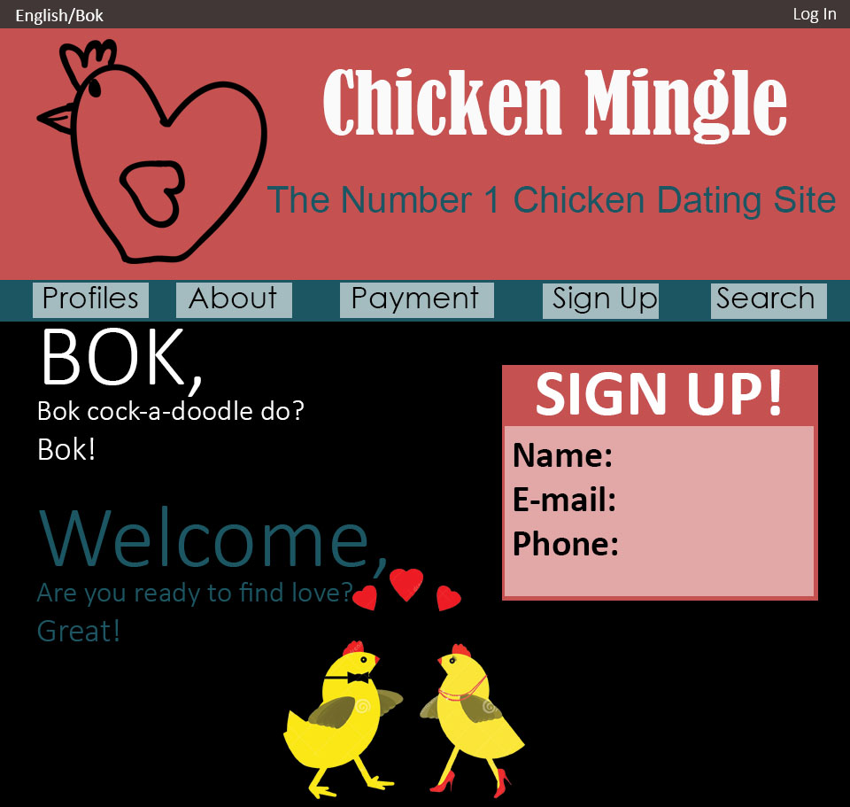

Medium
The classroom has a lot of students so a different colour on the slideshow headings, something darker than yellow, would increase the legibility of the font.
All of the information provided was great, but if the group slowed down their speaking it would be a lot easier for the audience to follow.
The examples given by the group were great because they allowed the audience to fully understand their assignment.
Chicken Mingle Feedback
The dark red heading placed on the red background makes it illegible. A lighter background or lighter font would make the words pop.
If you narrowed down the amount of colours on the webpage, then you can focus your audience’s eyes to specific sections of the webpage.
A decorative font type would help draw the eyes to the navigation bar.